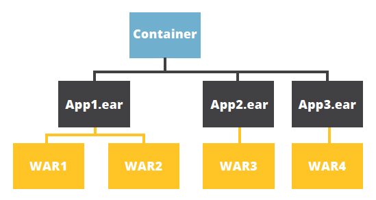
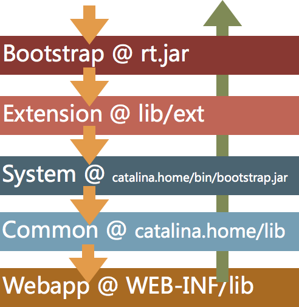
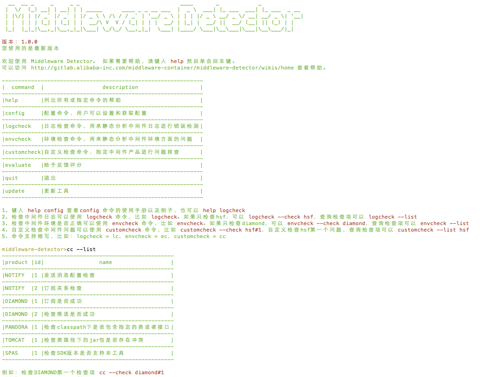
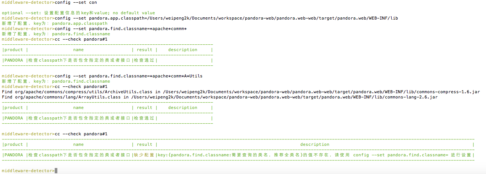
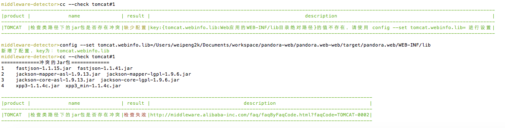

前言
转载自并发编程网 – ifeve.com本文链接地址: 深入浅出ClassLoader
在之前的实习中，也接触到一些包依赖冲突的问题，确实非常麻烦，最近在复习jvm类加载时，看见一篇很不错的文章，9除了理论也结合了实践，故转载之。
你真的了解ClassLoader吗？
这篇文章翻译自zeroturnaround.com的 Do You Really Get Classloaders? ，融入和补充了笔者的一些实践、经验和样例。本文的例子比原文更加具有实际意义，文字内容也更充沛一些，非常感谢作者 Jevgeni Kabanov 能够共享如此优秀的文档。
1. 为什么你需要了解和敬畏ClassLoader
ClassLoader在Java语言中占据了核心地位，Java应用服务器，OSGi，以及大量的网络框架，它们大多数都用到了ClassLoader。如果在使用过程中出现了类加载错误，你能解决它吗？
我们将从JVM和开发者两个角度讲述ClassLoader，将会选择一些典型的案例，然后演示如何解决它们。NoClassDefFoundError，LinkageError等很多错误都会有特定的表征，我们分析每个例子，然后进行解决。
2. 进入ClassLoader
每个ClassLoader对象都是一个java.lang.ClassLoader的实例。每个Class对象都被这些ClassLoader对象所加载，通过继承java.lang.ClassLoader可以扩展出自定义ClassLoader，并使用这些自定义的ClassLoader对类进行加载。
先大体了解一下ClassLoader的API：
package java.lang;
public abstract class ClassLoader {
public Class loadClass(String name);
protected Class defineClass(byte[] b);
public URL getResource(String name);
public Enumeration getResources(String name);
public ClassLoader getParent();
}
最重要的是ClassLoader的loadClass方法，它接受一个全类名，然后返回一个Class类型的实例。
defineClass方法接受一组字节，然后将其具体化为一个Class类型实例，它一般从磁盘上加载一个文件，然后将文件的字节传递给JVM，通过JVM（native 方法）对于Class的定义，将其具体化，实例化为一个Class类型实例。
getParent方法返回其parent ClassLoader。
getResource和getResources方法，从给定的repository中查找URLs，同时它们也具备类似loadClass一样的代理机制，我们可以将loadClass视为：defineClass(getResource(name).getBytes())。
Java由于其晚绑定和“解释型”的特性，类型的加载是到最晚才进行，一个类型直到被调用构造函数、静态方法或者在字段上使用时才会被加载。
考虑如下代码：
public class A {
public void doSomething() {
B b = new B();
b.doSomethingElse();
}
}
代码：B b = new B();等同于B b = Class.forName(“B”, false, A.class.getClassLoader()).newInstance();
这代表着，在类型A中使用到的类型，将由加载了类型A的类加载器来进行加载。
3. ClassLoader继承体系
当启动一个JVM时，bootstrap 类加载器就会加载java的核心类，例如：rt.jar中的类。bootstrap 类加载器是其他类加载器的parent，它使唯一一个没有parent的类加载器。
接下来是extension 类加载器，它以bootstrap 类加载器作为parent，它用来从Java系统变量java.ext.dir中的jar包中加载类的。
第三个，也是最重要的一个就是开发者使用的system classpath 类加载器 。它是extension 类加载器 的child，它用来从Java系统变量java.class.path下面加载类，可以通过 -classpath 来指定这个位置。
注意类加载器的体系并不是“继承”体系，而是一个“委派”体系。大多数类加载器首先会到自己的parent中查找类或者资源，如果找不到，才会在自己的本地进行查找。事实上，类加载器被定义加载哪些在parent中无法加载到的类，这样在较高层级的类加载器上的类型能够被“赋值”为较低类加载器加载的类型。
类加载器的委托行为动机是为了避免相同的类被加载多次。回到1995年，Java的主要方向被放在Applet上，那时候网络带宽优先，所以程序中的类直到用时才会被加载。但是事实上，Java在服务器端展示了强劲的能力，但是服务器端要求类加载器能够反转委派原则，也就是先加载本地的类，如果加载不到，再到parent中加载。
JavaEE的 委派模型

每个方块都是一个类加载器，JavaEE规范推荐每个模块的类加载器先加载本类加载的内容，如果加载不到才回到parent类加载器中尝试加载。
反转委派原则的原因是应用服务器中所携带的类库并不是应用所期待的，也许不适合应用开发者，一个常见的例子就是log4j的依赖在容器和不同的应用中都存在，但是它们的版本大都不同。
Tomcat的 类加载顺序（开启了delegate模式）

在Tomcat中，默认的行为是先尝试在Bootstrap和Extension中进行类型加载，如果加载不到则在WebappClassLoader中进行加载，如果还是找不到则在Common中进行查找。在Alibaba使用的Tomcat开启了delegate模式，因此加载类型时会以parent类加载器优先。
4. NoClassDefFoundError
NoClassDefFoundError是在开发JavaEE程序中常见的一种问题。该问题会随着你所使用的JavaEE中间件环境的复杂度以及应用本身的体量变得更加复杂，尤其是现在的JavaEE服务器具有大量的类加载器。
在JavaDoc中对NoClassDefFoundError的产生是由于JVM或者类加载器实例尝试加载类型的定义，但是该定义却没有找到，影响了执行路径。换句话说，在编译时这个类是能够被找到的，但是在执行时却没有找到。
这一刻IDE是没有出错提醒的，但是在运行时却出现了错误。
看看如下示例：
/**
* @author weipeng2k 2015年3月27日 下午5:15:15
*/
@WebServlet(name = "NoClassDefFoundErrorServlet", urlPatterns = "/noClassDefFoundError.do")
public class NoClassDefFoundErrorServlet extends HttpServlet {
private static final long serialVersionUID = 61585757018374721L;
@Override
protected void doGet(HttpServletRequest req, HttpServletResponse resp) throws ServletException, IOException {
resp.getWriter().println(TestCase.class.toString());
}
}
在看pom.xml中对于依赖的定义：
<dependencies>
<dependency>
<groupId>junit</groupId>
<artifactId>junit</artifactId>
<version>3.8.1</version>
<scope>provided</scope>
</dependency>
<dependency>
<groupId>javax.servlet</groupId>
<artifactId>servlet-api</artifactId>
<version>3.0</version>
<scope>provided</scope>
</dependency>
<dependency>
<groupId>org.springframework</groupId>
<artifactId>spring</artifactId>
<version>2.5.6</version>
</dependency>
</dependencies>
其中对于junit的依赖是provided级别的，这里是为了能简化错误出现的条件。可以看到，在NoClassDefFoundErrorServlet中，使用了junit.jar中的TestCase，但是junit.jar在WEB-INF/lib中却没有，从而导致WebappClassLoader在进行加载TestCase时无法找到，从而抛出NoClassDefFoundError。我们需要从最终的war包中确定是否存在这个类，而不是在IDE中进行搜索。
5. NoSuchMethodError
在另一个场景中，我们可能遇到了另一个错误，也就是NoSuchMethodError。
NoSuchMethodError代表这个类型确实存在，但是一个不正确的版本被加载了。为了解决这个问题我们可以使用 ‘-verbose:class’ 来判断该JVM加载的到底是哪个版本。
看如下示例：
import org.springframework.beans.factory.BeanFactoryUtils;
/**
* @author weipeng2k 2015年3月31日 上午9:09:58
*/
@WebServlet(name = "NoSuchMethodErrorServlet", urlPatterns = { "/noSuchMethodError.do" })
public class NoSuchMethodErrorServlet extends HttpServlet {
private static final long serialVersionUID = 1699609060417354821L;
@Override
protected void doGet(HttpServletRequest req, HttpServletResponse resp) throws ServletException, IOException {
BeanFactoryUtils.isGeneratedBeanName("xxx");
resp.getWriter().println("done.");
}
}
在doGet方法中调用了BeanFactoryUtils.isGeneratedBeanName(”xxx“);，看一下项目的pom依赖。
<dependencies>
<dependency>
<groupId>junit</groupId>
<artifactId>junit</artifactId>
<version>4.11</version>
<scope>provided</scope>
</dependency>
<dependency>
<groupId>javax.servlet</groupId>
<artifactId>servlet-api</artifactId>
<version>3.0</version>
<scope>provided</scope>
</dependency>
<dependency>
<groupId>org.springframework</groupId>
<artifactId>org.springframework.context</artifactId>
<version>3.0.5.RELEASE</version>
<scope>provided</scope>
</dependency>
<dependency>
<groupId>org.apache.mina</groupId>
<artifactId>mina-core</artifactId>
<version>2.0.7</version>
</dependency>
<dependency>
<groupId>com.alibaba.external</groupId>
<artifactId>sourceforge.spring</artifactId>
<version>2.0.7</version>
</dependency>
</dependencies>
这里为了方便观察到结果，将org.springframework.context的 scope 改为了 provided ，目的是不将其打包入war包，而只是使用了sourceforge.spring中定义的2.0.7版本，这个版本肯定没有isGeneratedBeanName(String name)方法，但是在IDE中，由于应用依赖到了高版本的spring从而能够编译通过，但是在运行时却没有那么好运了。这种错误，常见于 Maven坐标 的变动，使得应用依赖了多个 相同内容，不同版本 的jar包，以致在运行时选择了非期望的版本。
6. ClassCastException
NoClassDefFoundError和NoSuchMethodError是两个在 JavaEE 环境中经常出现的问题，这些问题需要 开发人员了解问题的本质，才能够被 从容 的处理。
下面我们看一下ClassCastException，在一个类加载器的情况下，一般出现这种错误都会是在转型操作时，比如：A a = (A) method();，很容易判断出来method()方法返回的类型不是类型A，但是在 JavaEE 多个类加载器的环境下就会出现一些难以定位的情况。
看如下示例：
package com.murdock.classloader.servlet;
import java.io.File;
import java.io.IOException;
import java.net.URL;
import javax.servlet.ServletException;
import javax.servlet.annotation.WebServlet;
import javax.servlet.http.HttpServlet;
import javax.servlet.http.HttpServletRequest;
import javax.servlet.http.HttpServletResponse;
import org.apache.mina.proxy.utils.MD4;
import com.murdock.classloader.CachedClassLoader;
/**
* @author weipeng2k 2015年4月4日 下午6:00:54
*/
@WebServlet(name = "ClassCastExceptionServlet", urlPatterns = "/classCastException.do")
public class ClassCastExceptionServlet extends HttpServlet {
private static final long serialVersionUID = -8959000121057369987L;
@Override
protected void doGet(HttpServletRequest req, HttpServletResponse resp) throws ServletException, IOException {
String localFirst = req.getParameter("localFirst");
CachedClassLoader cl = null;
cl = new CachedClassLoader(
new URL[] { new File(
"/Users/weipeng2k/.m2/repository/org/apache/mina/mina-core/2.0.7/mina-core-2.0.7.jar").toURI()
.toURL() }, this.getClass().getClassLoader());
if ("false".equals(localFirst)) {
cl.setLocalFirst(false);
}
try {
Class<?> klass = cl.loadClass("org.apache.mina.proxy.utils.MD4");
MD4 md4 = (MD4) klass.newInstance();
resp.getWriter().println(md4);
} catch (Exception ex) {
throw new RuntimeException(ex);
} finally {
cl.close();
}
}
}
在ClassCastExceptionServlet中，构建了一个CachedClassLoader，利用这个ClassLoader加载org.apache.mina.proxy.utils.MD4，然后反射调用构造该类的实例，将其赋给MD4，最后将其打印到浏览器。
请求URL：http://localhost:8080/classCastException.do
响应页面，出现错误：
java.lang.RuntimeException: java.lang.ClassCastException: org.apache.mina.proxy.utils.MD4 cannot be cast to org.apache.mina.proxy.utils.MD4
com.murdock.classloader.servlet.ClassCastExceptionServlet.doGet(ClassCastExceptionServlet.java:42)
javax.servlet.http.HttpServlet.service(HttpServlet.java:622) javax.servlet.http.HttpServlet.service(HttpServlet.java:729)
org.apache.tomcat.websocket.server.WsFilter.doFilter(WsFilter.java:52)
请求URL ：http://localhost:8080/classCastException.do?localFirst=false 响应页面，输出正常：
org.apache.mina.proxy.utils.MD4@401c8af5
请求的URL加上了localFirst=false就可以正常的输出，而它也就是在CachedClassLoder上设置了一下，为什么有这么大的差别。org.apache.mina.proxy.utils.MD4全类名一致，为什么会出现ClassCastException呢？
在JVM中，如何确定一个类型实例？答：全类名吗？不是，是类加载器加上全类名。在JVM中，类型被定义在一个叫SystemDictionary 的数据结构中，该数据结构接受类加载器和全类名作为参数，返回类型实例。
SystemDictionary 如图所示：

类型加载时，需要传入类加载器和需要加载的全类名，如果在 SystemDictionary 中能够命中一条记录，则返回class 列上对应的类型实例引用，如果无法命中记录，则会调用loader.loadClass(name);进行类型加载。
这里不会更加深入的介绍 SystemDictionary 如何进行类型加载的过程，而是需要指出 JVM中确定一个类型的坐标是通过类加载器和全类名做到的 。回想一下MD4 md4 = (MD4) klass.newInstance();，是不是代表着等式两边的MD4是不同的类加载器加载的呢？那问题一定出在 CachedClassLoader 上。这里贴一下loadClass(String name)方法的部分逻辑。
CachedClassLoader 的loadClass逻辑：
if (localFirst) {
try {
clazz = findClass(name);
if (clazz != null) {
return clazz;
}
} catch (ClassNotFoundException ex) {
}
return super.loadClass(name);
} else {
return super.loadClass(name);
}
可以看到在 localFirst 为true时，该类加载器会首先加载自身 repository 中的类型，如果加载不到，则会尝试默认的加载机制进行加载，也就是parent优先加载。这样就可以解释MD4 md4 = (MD4) klass.newInstance();，等式左边MD4 md4，这个类型是WebappClassLoader.org.apache.mina.proxy.utils.MD4，等式右边klass.newInstance()返回的类型是CachedClassLoader.org.apache.mina.proxy.utils.MD4，二者并不是同一个类型，所以无法完成类型转换，最终抛出 ClassCastException 。而当 localFirst 为false时，该类加载器遵循parent优先，从而会先委派给WebappClassLoader进行加载，当然转型也就不会有问题了。
在传统的双亲委派模型下，这种 ClassCastException 是不会发生的，因为它的加载顺序杜绝了出现这种问题的可能，而在 JavaEE 环境下，每个资源模块（比如一个war包）都优先使用自身的资源，正因为突破了双亲委派模型， 奇怪的问题 就发生了。
7. LinkageError
有时候事情会变得更糟，和 ClassCastException 本质一样，加载自不同位置的相同类在同一段逻辑（比如：方法）中交互时，会出现 LinkageError 。
我们先看一下出错的异常信息，然后分析一下它产生的条件和原因：
java.lang.LinkageError: loader constraint violation: when resolving overridden method "com.murdock.classloader.linkageerror.Param2.generate()Lcom/murdock/classloader/linkageerror/Param2;" the class loader (instance of com/murdock/classloader/linkageerror/LinkageErrorTest$1) of the current class, com/murdock/classloader/linkageerror/Param2, and its superclass loader (instance of sun/misc/Launcher$AppClassLoader), have different Class objects for the type com/murdock/classloader/linkageerror/Param2 used in the signature
at java.lang.Class.getDeclaredConstructors0(Native Method)
at java.lang.Class.privateGetDeclaredConstructors(Class.java:2671)
at java.lang.Class.getConstructor0(Class.java:3075)
at java.lang.Class.newInstance(Class.java:412)
at com.murdock.classloader.linkageerror.LinkageErrorTest.test(LinkageErrorTest.java:34)
at sun.reflect.NativeMethodAccessorImpl.invoke0(Native Method)
at sun.reflect.NativeMethodAccessorImpl.invoke(NativeMethodAccessorImpl.java:62)
at sun.reflect.DelegatingMethodAccessorImpl.invoke(DelegatingMethodAccessorImpl.java:43)
at java.lang.reflect.Method.invoke(Method.java:497)
at org.junit.runners.model.FrameworkMethod$1.runReflectiveCall(FrameworkMethod.java:47)
at org.junit.internal.runners.model.ReflectiveCallable.run(ReflectiveCallable.java:12)
at org.junit.runners.model.FrameworkMethod.invokeExplosively(FrameworkMethod.java:44)
at org.junit.internal.runners.statements.InvokeMethod.evaluate(InvokeMethod.java:17)
看到一堆出错信息，但是不要紧张，慢慢的读一下出错信息，这种错误一般会让你直觉感觉不会出现。loader constraint violation表示类加载器冲突了，这句话暗示： 相同的类，由不同的ClassLoader加载，但是在这里遇到了。when resolving overridden method "com.murdock.classloader.linkageerror.Param2.generate()Lcom/murdock/classloader/linkageerror/Param2;"表示在解析那条语句出现了问题，这里表示在Param2.generate()方法的解析过程中出现了问题。the class loader (instance of com/murdock/classloader/linkageerror/LinkageErrorTest$1) of the current class, com/murdock/classloader/linkageerror/Param2,表示解析的语句所在的类型Param2是LinkageErrorTest$1类加载器加载的。and its superclass loader (instance of sun/misc/Launcher$AppClassLoader), have different Class objects for the type com/murdock/classloader/linkageerror/Param2 used in the signature表示Param2的超类Param中被覆盖的方法返回的类型Param2为Launcher$AppClassLoader加载。
Linkage在常规情况下非常难以制造，只有在多个类加载器交互时才有可能出现，下面看一下问题代码。出现问题的类和参数：
package com.murdock.classloader.linkageerror;
/**
* @author weipeng2k 2015年4月28日 上午10:04:26
*/
public class HandleUtils {
public void m(Param param) {
param.generate();
}
}
package com.murdock.classloader.linkageerror;
public class Param {
public Param2 generate() {
return new Param2();
}
}
package com.murdock.classloader.linkageerror;
public class Param2 extends Param {
public Param2 generate() {
return new Param2();
}
}
测试用例如下：
@Test
public void test() throws Exception {
// cl1在加载HandleUtils和Param时将会使用AppClassLoader
URLClassLoader cl1 = new URLClassLoader(new URL[] {new File("target/test-classes").toURI().toURL()}, null) {
@Override
public Class<?> loadClass(String name) throws ClassNotFoundException {
if ("com.murdock.classloader.linkageerror.HandleUtils".equals(name)) {
return ClassLoader.getSystemClassLoader().loadClass(name);
}
if ("com.murdock.classloader.linkageerror.Param".equals(name)) {
return ClassLoader.getSystemClassLoader().loadClass(name);
}
return super.loadClass(name);
}
};
ClassLoader.getSystemClassLoader().loadClass("com.murdock.classloader.linkageerror.Param2");
HandleUtils hu = (HandleUtils) cl1.loadClass("com.murdock.classloader.linkageerror.HandleUtils").newInstance();
hu.m((Param) cl1.loadClass("com.murdock.classloader.linkageerror.Param2").newInstance());
}
LinkageError 需要观察哪个类被不同的类加载器加载了，在哪个方法或者调用处发生（交汇）的，然后才能想解决方法，解决方法无外乎两种。第一，还是不同的类加载器加载，但是相互不再交汇影响，这里需要针对发生问题的地方做一些改动，比如更换实现方式，避免出现上述问题；第二，冲突的类需要由一个Parent类加载器进行加载。LinkageError 和ClassCastException 本质是一样的，加载自不同类加载器的类型，在同一个类的方法或者调用中出现，如果有转型操作那么就会抛 ClassCastException ，如果是直接的方法调用处的参数或者返回值解析，那么就会产生 LinkageError 。
8. 类加载器问题对照表
遇到类加载器问题时，可以尝试使用下面的表格进行问题排查。
| 类找不到 | 加载了不正确的类 | 多于一个类被加载 |
|---|---|---|
| ClassNotFoundException NoClassDefFoundError | IncompatibleClassChangeError NoSuchMethodError NoSuchFieldError IllegalAccessError | ClassCastException LinkageError |
| IDE class lookup (Ctrl+Shift+T in Eclipse)find . -name “*.jar” -exec jar -tf {} \; | grep DateUtils使用middleware-detector | 通过在启动参数中加 -verbose:class，观察加载的类来自哪个jar包使用middelware-detector | 通过-verbose:class观察 |
9. 使用Middleware-Detector进行类查找
出现了 ClassNotFoundException 或者 NoClassDefFoundError ，需要检查一下程序的classpath下面是否存在你所预想的类。这时可以使用Middleware-Detector工具进行类查找，该工具是Alibaba中间件团队开发的一款中间件问题诊断工具，当然也包括了许多支持性质的工具。
下面我们使用Middleware-Detector进行类查找，比如我们要查找apache的Utils，我们怀疑这个类在classpath下找不到。
启动middleware-detector，查看 Pandora 提供的自定义检查器，目前编号为1的Pandora自定义检查器就是进行classpath下的指定类或者接口的查找工作。

配置classpath目录以及需要查找的类名，这里类名支持 号进行模糊匹配。可以看到设定当前的classpath目录到了WEB-INF/lib* 下面，然后找寻*apache*comm*A*Utils是否存在，如果能够找到则会输出到终端，这里就找到了ArchiveUtils和ArrayUtils两个符合要求的类。如果无法找到，那么就可能是pom.xml的依赖配置不正确了，需要检查一下。

10. 使用Middleware-Detector进行检查类冲突
出现了 NoSuchMethodError 或者 NoSuchFieldError ，这时一般是应用的classpath下包含了多个包含了想同类的jar包，而很不幸的加载到了 不正确 的jar包。
我们可以通过使用Middleware-Detector的类查找进行定位，但是不能发现一个修复一个，这里Middleware-Detector提供了一个检查classpath下有冲突jar包的功能。只需要设置classpath的目录，然后运行cc –check tomcat#1即可。有冲突的jar就需要自己在pom.xml里面进行仲裁或者排除了。

原创文章，转载请注明： 转载自并发编程网 – ifeve.com本文链接地址: 深入浅出ClassLoader